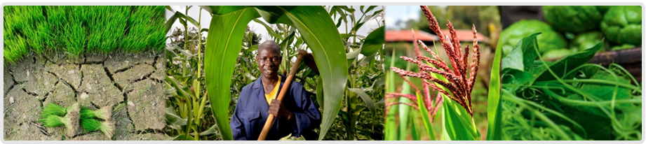

The Climate Smart Agriculture Decision Support Platform was constructed to provide access to a broad database of CSA practices that have been tested around the world. This information is aimed at aiding endeavors such as identify what CSA options exist for different contexts and gaps in research. We welcome you to search our database and contribute your own information to the compendium. Our prioritization tool and complementary stakeholder engagement process were developed to identify best options for mainstreaming CSA.